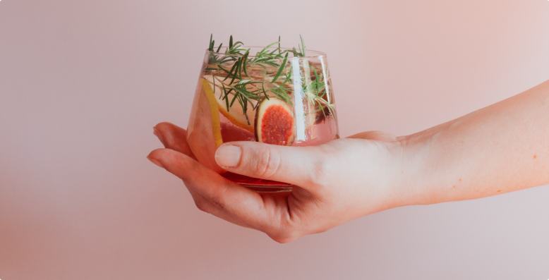

Obviously the Time Lords have programmed the TARDIS always to return to Earth. It seems that I am some kind of a galactic yo-yo! I reversed the polarity of the neutron flow. Overconfidence, this, and a small screwdriver. I’m absolutely sorted. New-new-Doctor. We are always in trouble! Isn't it extraordinary—it follows us everywhere. I am the Doctor! The original you might say! How can you miss me? I'm easy to find. I'm the guy with two hearts, remember? Shut up, K-9! You were expecting someone else?
...history sometimes gives us a terrible shock, and that is because we don't quite fully understand. Why should we? After all, we're too small to realise its final pattern. Therefore don't try and judge it from where you stand. I hate computers and refuse to be bullied by them. Jo, look. That's Skaro. Let's go in! And in that battle there was a man with more blood on his hands than any other. A man who would commit a crime that would silence the universe. And that man was me. Good grief.... It's a Stegosaurus!
Small though it is, the human brain can be quite effective when working at full efficiency, not unlike myself! Jamie, remind me to give you a lesson in tying knots, sometime. Five foot one and crying - you never stood a chance. I am the Doctor! The original, you might say! Physician, heal thyself. This is a situation that requires tact and finesse. Fortunately, I am blessed with both. He was dead already, I'm saving us. Follow me, and run! A straight line may be the shortest distance between two points, but it is by no means the most interesting.
Jo, did you fail Latin as well as science? Usually called 'The Doctor.' Or 'The Caretaker.' Or 'Get off this planet.' Though, strictly speaking, that probably isn't a name. Rest is for the weary, sleep is for the dead. I feel like a hungry man eager for the feast! Only the madman can see the way clearly through the tangled forest. Well, there's a probability of anything. Statistically speaking, if you gave typewriters to a treeful of monkeys, they'd eventually produce the works of William Shakespeare.
Post Title
previous post

next post
“blockquote (optional) lorem lorem lorem asdl;fa aslkasdlfk ;asjdf ;l asdl;asd a;slkdfj l;akjasd flkj asdlkj as;l a;lsk dfjj;lkjs”